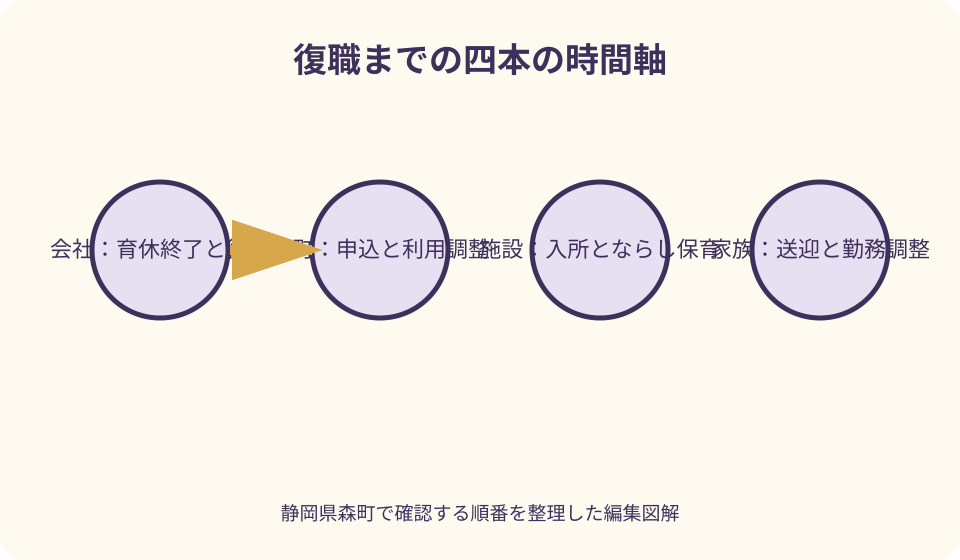
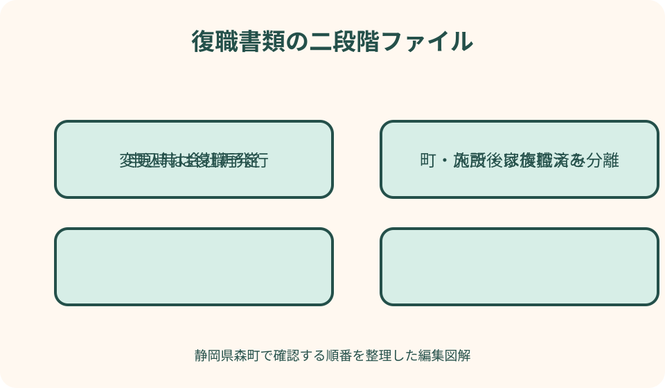

妊娠・子育て手続｜最終確認 2026-08-10
静岡県森町で育休から復職する保育手続き｜就労証明・ならし保育
育児休業の終了日、会社へ戻る復職日、保育所等の入所日、ならし保育の終了日は別々です。森町では復職日の時期に応じた入所可能日の考え方が示され、入所後は速やかに復職済みの就労証明書を提出する案内があります。会社、森町、施設、家族の四者が同じ日付を見られるよう、予定と確定を分けたカレンダーを作ります。

編集イラスト復職に関する四つの日付を分ける
最初に、育児休業終了日、復職日、入所日、ならし保育終了見込み日を四行に分けます。会社の書類上の復職日と、子どもを通常時間預けて勤務できる日は同じとは限りません。
育児休業終了日は会社の休業期間が終わる日、復職日は実際に勤務へ戻る日として会社へ確認します。休日を挟む場合の扱いも、家庭のカレンダーだけで決めません。
入所日は森町の正式決定通知、ならし保育の時間は施設との面談で確認します。申込書へ希望日を書いたことや口頭の空き回答は、正式な利用開始決定ではありません。
この記事の確認日は2026年8月10日です。入所可能日の取扱い、申込期間、就労証明書、ならし保育は年度や施設で変わり得ます。対象年度の森町公式と個別通知を優先してください。
森町へ復職予定を相談する
相談時には、子どもの生年月日、入所希望月、育休終了予定日、復職予定日、通常・短時間勤務の予定、希望施設を伝えます。復職予定が会社決裁前なら、その段階も説明します。
森町の入所案内では、育児休業明けの新規入所は『就労』での申請とされています。育休中という理由だけの新規申請ではなく、復職後の就労内容を証明する準備が必要です。
健康こども課幼稚園保育園係には、申込期限、復職日と入所可能月、就労証明書の証明日、復職後の再提出を確認します。施設には、ならし保育と持ち物を別に聞きます。
回答は、確認日、担当部署、前提条件と一緒に記録します。復職日が変更された場合、以前の回答をそのまま使わず、新しい日付で再確認します。
復職日から入所可能月を確認する
森町の令和8年度案内では、職場復帰日が1日から15日の場合は復職月の前月初日から、16日から末日の場合は復職月の当月初日から入所可能とする表があります。
例えば月前半復職だから必ず前月入所できるという意味ではありません。申込み、保育の必要性認定、施設の空き、利用調整、転入予定者の要件などを満たしたうえで決定されます。
入所月に応じて育児休業期限を切り上げる予定がある場合、任意の希望月を設定可能と町は案内しています。会社が短縮を認めるか、就労証明書にどう記載するかを先に確認します。
復職日が月前半から後半へ変わるなど、区分をまたぐ変更が起きたら、入所希望月と内定への影響を町へ連絡します。家庭で表を読み替えて申込内容を放置しません。
入所は利用調整で決まる
森町は、希望者が多いとき、保護者の就労や家庭状況、きょうだいの入園状況などを総合し、基準に沿って利用調整すると案内しています。復職予定があっても特定園への入所は保証されません。
申込みは先着順ではありませんが、申込期間後は選考されない場合があるため、期限内に必要書類をそろえることが重要です。期限と優先順位を混同しません。
こども家庭庁も、2号・3号認定では市町村が保育の必要性を認定し、希望や施設状況を踏まえて利用調整すると説明しています。認定と利用先決定は別段階です。
入所未決定の間は、会社へ確定したように伝えず、結果予定時期と代替案を共有します。復職日の変更可否、休暇、在宅勤務などを会社と相談します。
就労証明書を会社へ依頼する
森町が対象年度に掲載する就労証明書を取得し、会社へ提出先、入所年度、返却希望日を伝えます。前年度や別自治体の用紙を流用しません。
会社には、雇用期間、通常の就労時間、育児休業期間、復職予定日、短時間勤務予定など、様式が求める項目を会社記録に基づいて記載してもらいます。
令和8年度の森町案内では、証明日から3か月以内の就労証明書が必要です。早すぎて期限を超えず、遅すぎて申込締切に間に合わないよう、発行日を逆算します。
返却された証明書に誤りや空欄があっても、保護者が補筆しません。会社へ戻して訂正・再発行を依頼し、締切が迫る場合は森町へ状況を連絡します。
就労証明書の育休・復職欄を確認する
こども家庭庁の標準様式記載要領は、育休を終えて復職予定なら復職予定日、直近に復職済みなら復職年月日を記載する説明があります。予定と実績を分けます。
育児休業終了予定日前の入所内定時に休業を短縮できるかという欄もあります。会社が可・予定・否のどれを証明できるか、保護者の希望だけで選びません。
通常勤務時間と育児短時間勤務後の時間は別欄です。会社には、短時間勤務の利用予定期間と主な時間帯を正確に記載してもらいます。
復職予定日、育休終了日、短縮可否が申込書や会社との合意と一致するか確認します。不一致があれば、どの情報が最新か会社と町へ伝えます。
入所後の復職済み証明
森町の申込チェックシートは、育児休業から復職する場合、入所後速やかに復職したことを証明する就労証明書を提出するよう案内しています。予定証明だけで完了ではありません。
復職後、会社がいつ証明書を発行できるか事前に確認します。初出勤日に依頼しても即日発行されるとは限らないため、人事担当と返却予定日を共有します。
復職済み証明には実際の復職年月日を会社が記載します。予定日と違った場合は、以前の証明をコピーして日付を書き換えず、新しい証明を受けます。
提出期限、提出方法、証明日の条件は森町へ確認します。施設へ渡すだけで町へ提出されたことになるかを決めつけず、受付先を確認してください。
ならし保育と復職を分ける
森町は、初めて保育所へ入所する子どもについて、短い保育時間から通常時間へ移るならし保育を行うと案内しています。期間は施設や子どもにより異なります。
町ページでは、おおむね2週間程度は早めの迎えが必要と説明されていますが、全員が同じ日数・時間ではありません。施設面談で初日の時間と延長の目安を聞きます。
入所日前にならし保育はできないと森町は案内しています。復職前に完了させたい場合も、入所可能日と会社の育休終了を町・会社へ確認します。
ならし保育が延びる場合に備え、家族の迎え、有給休暇、在宅勤務を準備します。予定どおり終わらなかったことを子どもや保護者の失敗と考えません。
ならし保育中の勤務調整
初週、次週、通常移行後の三段階で、登園・迎え時刻を会社へ共有します。『2週間休む』と一律に決めず、施設の見込みと子どもの様子を基に更新します。
保護者二人がいる場合、午前勤務と午後迎えを分担できるか、交代で休暇を取れるかを検討します。片方だけに全期間を任せません。
祖父母などへ迎えを頼む場合は、施設の登録、本人確認、チャイルドシート、緊急連絡を確認します。口頭で家族と決めただけでは引き渡しできない場合があります。
復職直後に研修、出張、夜勤があるなら、会社へ早めに伝えます。ならし保育の終了を前提に業務を確定せず、代替担当と変更連絡の期限を決めます。

短時間勤務を利用する場合
短時間勤務を希望する場合は、会社へ申出期限、開始日、終了予定日、実際の始業・終業時刻を確認します。法制度の対象かどうかも会社または労働局へ相談します。
厚生労働省は、3歳未満の子を養育する一定の労働者に対する短時間勤務措置を案内していますが、個別の対象要件や会社の手続きは勤務先規程で確認します。
就労証明書には、通常の就労時間と短時間勤務中の時間を会社が分けて記載します。保護者が保育の認定に合わせて数字を調整しません。
短時間勤務により森町の保育認定時間が変わるかは町へ確認します。会社の時短承認と、町の標準時間・短時間認定は同じ手続きではありません。
勤務時間と送迎時間を合わせる
会社が証明する勤務時間、通勤時間、施設での受け渡し、送迎者の移動を分けます。勤務終了と同時に園へ到着できる前提を置きません。
森町内の施設は開所時間が異なります。復職後の始業・終業に対し、通常保育内か延長利用かを施設へ確認します。
在宅勤務日でも、勤務中に保育できると自己判断して認定条件を変えません。会社の勤務扱いと町の認定をそれぞれ確認します。
シフト制や夜勤は、一週間ではなく一か月の勤務表で送迎を検証します。曜日ごとの迎え担当と、急な変更時の連絡方法を決めます。
家族送迎を曜日別に決める
送迎表は、朝と夕方を別列にし、月曜から金曜まで担当者を書きます。『できる人』ではなく、通常担当と代替担当を明記します。
きょうだいの園・学校、習い事、家族の通勤を同じ時刻表へ置きます。別施設の閉所時刻が早い場合、迎え順も決めます。
車が使えない日、大雨、通行止め、子どもの発熱を想定します。代替者宅から園までの経路と所要時間も実測します。
施設へ登録する送迎者、連絡なしで変更できる範囲、本人確認を確認します。家族間の共有だけで施設側の登録が更新されたと思わないようにします。
復職延期・育休延長が決まった場合
復職延期が決まったら、会社の決定日、新しい育休終了予定日、新しい復職予定日を書きます。入所申込時の証明内容と異なるため、直ちに森町へ連絡します。
森町は申込内容に変更がある場合、速やかな連絡と該当証明書の再提出を案内しています。古い予定で利用調整・決定が進むのを避けます。
入所内定後の延期では、内定や利用開始が継続するかを記事から断定できません。会社の新証明を用意し、町の個別判断を受けます。
育休給付や延長の手続きは、保育所申込みとは別に勤務先・ハローワーク等へ確認します。町の通知だけで雇用保険手続きが完了するとは限りません。
勤務内容が変わった場合の変更届
申込み後に就労時間、勤務先、復職日、雇用形態が変わったら、変更前後と適用日を町へ伝えます。会社の内示段階でも相談しておくと書類準備ができます。
森町は、就労時間の増減、退職、求職から就職への変更などで、就労証明書等の再提出を案内しています。変更届だけで終わるとは限りません。
住所・氏名・家族構成の変更は別の届出が示されています。転居と復職が重なる家庭は、住民異動、申込情報、就労証明を分けます。
変更を伝えず入所が決定した場合、内定・決定が取り消される場合があると町は注意しています。不利になるかを恐れて連絡を遅らせず、事実を更新します。
子どもの体調と新生活の情報
入所面談では、食事、睡眠、排せつ、アレルギー、服薬、予防接種、発達、安心する声かけを伝えます。診断や対応を保護者だけで変更しません。
ならし保育中に発熱や体調不良があれば、通常移行の時期を施設と相談します。欠席分を急いで取り戻すという考えで時間を延ばしません。
復職初週の緊急連絡は、会議中でも受けられる人を第一連絡先にします。会社へも保育開始直後で呼び出しの可能性があることを共有します。
通院予定がある場合は、勤務・保育・家族送迎を調整します。医療情報の提出範囲は施設へ確認し、家族共有チャットへ不用意に載せません。
復職準備を分ける良い点
良い点は、復職日とならし保育終了を同日と誤認しないことです。早迎え期間を会社と家族へ説明しやすくなります。
予定証明と復職済み証明を分けると、会社へ二度依頼する時期をあらかじめ確保できます。提出漏れもチェックできます。
通常勤務と短時間勤務を別欄にすれば、町の認定時間、施設の延長、家庭の送迎を正確に相談できます。
入所未決定の段階で代替案を用意すると、利用調整の結果が希望どおりでない場合も会社との交渉をゼロから始めずに済みます。
森町の案内へ注文したい点
注文したい点は、復職日、入所可能月、ならし保育、復職後証明を一枚へ置いた専用カレンダーがあると、会社と共有しやすいことです。
就労証明書を申込時と復職後にいつ提出するか、証明日の条件、短時間勤務の書き方がFAQ化されると再発行を減らせます。
復職延期、育休短縮、勤務時間変更が起きた場合の連絡先と必要様式も、変更別一覧があると安心です。
ならし保育は施設・子どもで異なることを前提に、見込み期間と会社へ伝える例が示されると、入所日即フル勤務という誤解を減らせます。
入所や復職が予定どおりでない場合の代案・結論
代案・結論として、入所が決まらない場合は、希望変更、次回調整、一時的サービス、家族支援、休暇・在宅勤務を候補にします。どれも利用確定を確認します。
復職日を変更できるかは会社へ、入所希望月の変更は森町へ、ならし保育は施設へ相談します。一つの窓口へ全ての判断を求めません。
就労証明書が間に合わない場合は、会社への依頼日と発行予定を町へ伝えます。保護者が予定を記入して提出する代案は取りません。
最終的には、会社の復職、町の認定・利用調整、施設の受入、家族送迎という四条件がそろう必要があります。記事は入所・復職成立を保証しません。
図解案1：復職までの四本の時間軸
一つ目の図解は、会社、森町、保育施設、家族の四本を横に並べます。会社線には育休終了・復職・短時間勤務、町線には申込・利用調整・決定・復職証明を置きます。
施設線には面談、入所日、ならし保育、通常保育、家族線には送迎、有給、代替迎えを配置します。同じ縦線にない日付を視覚化します。
復職日が1〜15日と16日〜末日で入所可能日の考え方が異なる点を、町線の分岐として表します。利用調整がある注意を間に置きます。
背景に森町の保健福祉センター、町内保育施設、勤務先への道を描きます。日付表と地域の移動を結びつける固有図にします。
図解案2：復職書類の二段階ファイル
二つ目は、申込前の『復職予定ファイル』と入所後の『復職済みファイル』を左右に置きます。どちらにも会社発行の就労証明書を配置します。
予定側には育休期間、復職予定日、短縮可否、短時間勤務予定を置きます。実績側には実際の復職日と現在の勤務時間を置きます。
中央に入所決定とならし保育を置き、予定から実績へ自動転記しない矢印にします。日付変更時は会社へ再発行を依頼する線を描きます。
下段に、町提出、施設共有、家族控えを分けます。就労証明書の個人情報を必要先だけへ出すことも示します。

大石の視点：復職は一日ではなく移行期間
大石の視点では、復職をカレンダー上の一日だけで考えないことが大切です。入所準備、ならし保育、通常勤務、子どもの体調変化まで数週間の移行として見ます。
森町では自宅、施設、勤務先の距離が家庭ごとに違います。時短勤務の終了時刻だけでなく、迎えに必要な道路時間と施設の受け渡しを足します。
家族送迎が成立しない住まい方なら、第一希望園だけを前提にせず、別施設や勤務形態でも続けられるかを検討します。
予定が変わること自体を失敗と考えず、変わった日付を会社、町、施設、家族へ同じ内容で伝える仕組みを作ることが重要です。
家族で使う復職チェックリスト
チェックリストの先頭に、育休終了予定日、復職予定日、入所希望日、正式入所日、ならし保育見込みを書きます。予定と確定を色分けします。
書類欄は、申込時就労証明、申込書、チェックシート、内定・決定通知、復職後就労証明、変更届を並べます。
勤務欄には通常時間、短時間勤務、在宅日、通勤時間、延長保育を置きます。会社・町・施設の回答日を添えます。
送迎欄は曜日別の朝夕担当、代替者、緊急連絡先を記入します。ならし期間と通常移行後を別表にします。
一次情報を確認する順番
最初に森町の対象年度入所案内と申込チェックシートで、復職日と入所可能日、ならし保育、復職後証明を確認します。
次に森町の施設一覧で開所時間と場所を確認し、個別施設へならし保育、延長、送迎登録を聞きます。
就労証明書は森町掲載様式とこども家庭庁の記載要領を使い、会社へ育休・復職・時短欄の記載を依頼します。
短時間勤務など労働制度は厚生労働省の公式情報と会社規程を確認します。保育認定の判断は森町へ戻します。
森町と会社への問い合わせ例
森町の窓口は健康こども課幼稚園保育園係で、公式電話番号は0538-86-6300です。子どもの生年月日、希望月、復職日を用意します。
町には、『復職予定日は○月○日です。入所可能月、申込時と復職後の就労証明書、短時間勤務時の認定を確認したいです』と伝えます。
会社には、『森町の保育申込みに使う就労証明書です。育休終了、復職予定、短時間勤務、早期復職可否を会社記録に基づいて記載してください』と依頼します。
施設には、『入所日からのならし保育の見込み、初週の迎え時刻、延長利用、代替送迎者の登録を確認したいです』と質問します。
まとめ：会社・町・施設・家族の四者で合わせる
育休終了、復職、入所、ならし保育は別の日付です。会社、森町、施設、家族の四者で同じカレンダーを共有します。
就労証明書は申込時の予定と入所後の復職済みを分け、会社が作成します。短時間勤務や復職延期は変更前に町へ連絡します。
森町の入所可能日の考え方を満たしても、利用調整と正式決定があります。希望園への入所や予定日の復職を保証するものではありません。
今日の一歩は、四つの日付を書き、会社へ証明書の作成期間を確認し、森町へ入所可能月と復職後提出を尋ねることです。ならし保育の迎え担当も同時に決めます。
公式情報・確認先
掲載内容は次の一次情報を基礎に整理しました。営業、料金、催し、交通は変わるため、出発前または手続き前にリンク先で最新情報を確認してください。
- 令和8年度 保育所等入所の申込みについて（静岡県森町、2026-08-10確認）
- 令和8年度 保育所等申請・申込チェックシート（静岡県森町、2026-08-10確認）
- 保育所等について（静岡県森町、2026-08-10確認）
- 就労証明書に関する情報（こども家庭庁、2026-08-10確認）
- 就労証明書標準様式・記載要領（こども家庭庁、2026-08-10確認）
- よくわかる子ども・子育て支援新制度（こども家庭庁、2026-08-10確認）
- 短時間勤務等の措置（厚生労働省、2026-08-10確認）
- 育児休業等給付Q&A（厚生労働省、2026-08-10確認）